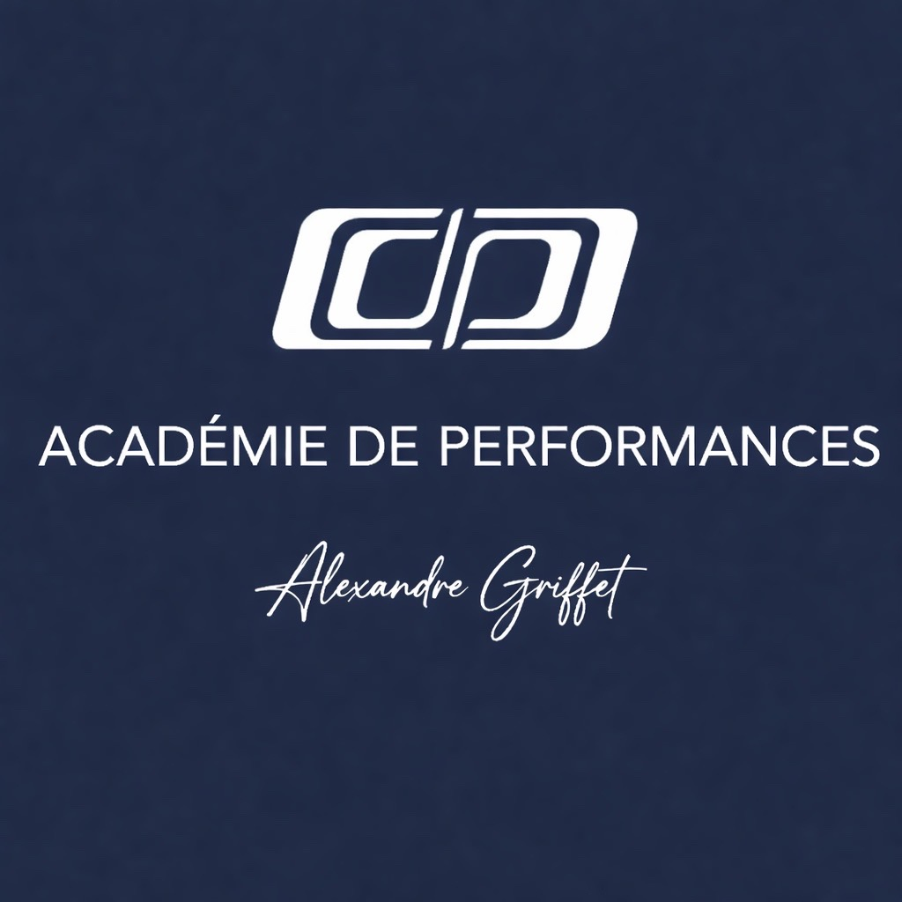

Synthèse globale • A4P
Cartographie mentale A4P
Lecture croisée du hub A4P à partir des informations enregistrées dans le navigateur.
Module 1
Aucune donnée
Complète le PMP pour alimenter cette zone.
Module 2
Aucune donnée
Le CMP sera pleinement croisé quand son moteur local enregistrera ses résultats.
Module 3
Aucune donnée
Le psycho-émotionnel sera pleinement croisé quand son moteur local enregistrera ses résultats.
Lecture actuelle
Cette synthèse lit déjà les données PMP disponibles dans le navigateur. Elle est prête à accueillir ensuite
les sorties CMP et psycho dans cette même architecture propre.
Ce que contient ce pack
Hubindex.html
Synthèsesynthese.html
PMPpmp/index.html local
CMPcmp/index.html point d’entrée propre
Psychopsycho/index.html point d’entrée propre